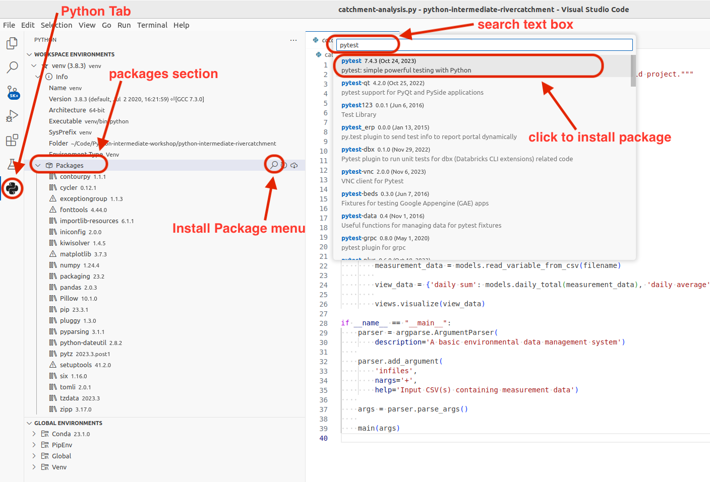
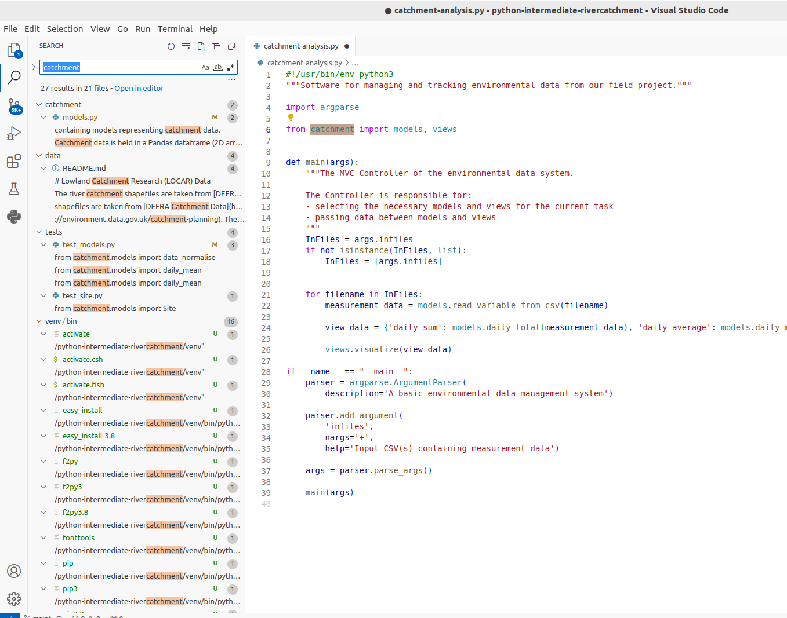

1.3 Integrated Software Development Environments
Last updated on 2024-11-25 | Edit this page
Overview
Questions
- What are Integrated Development Environments (IDEs)?
- What are the advantages of using IDEs for software development?
Objectives
- Set up a (virtual) development environment in Visual Studio Code (VS Code)
- Use VS Code to run a Python script
Introduction
As we have seen in the previous episode - even a simple software project is typically split into smaller functional units and modules, which are kept in separate files and subdirectories. As your code starts to grow and becomes more complex, it will involve many different files and various external libraries. You will need an application to help you manage all the complexities of, and provide you with some useful (visual) facilities for, the software development process. Such clever and useful graphical software development applications are called Integrated Development Environments (IDEs).
Integrated Development Environments
An IDE normally consists of at least a source code editor, build automation tools and a debugger. The boundaries between modern IDEs and other aspects of the broader software development process are often blurred. Nowadays IDEs also offer version control support, tools to construct graphical user interfaces (GUI) and web browser integration for web app development, source code inspection for dependencies and many other useful functionalities. The following is a list of the most commonly seen IDE features:
- syntax highlighting - to show the language constructs, keywords and the syntax errors with visually distinct colours and font effects
- code completion - to speed up programming by offering a set of possible (syntactically correct) code options
- code search - finding package, class, function and variable declarations, their usages and referencing
- version control support - to interact with source code repositories
- debugging - for setting breakpoints in the code editor, step-by-step execution of code and inspection of variables
IDEs are extremely useful and modern software development would be very hard without them. There are a number of IDEs available for Python development; a good overview is available from the Python Project Wiki. In addition to IDEs, there are also a number of code editors that have Python support. Code editors can be as simple as a text editor with syntax highlighting and code formatting capabilities (e.g., GNU EMACS, Vi/Vim). Most good code editors can also execute code and control a debugger, and some can also interact with a version control system. Compared to an IDE, a good dedicated code editor is usually smaller and quicker, but often less feature-rich. You will have to decide which one is the best for you - in this course we will learn how to use VS Code, a free multi-language (including Python) IDE. Some popular alternatives for Python include free and open source IDE Spyder and JetBrain’s free and open source PyCharm.
Using PyCharm for This Course
If you want to use PyCharm as your IDE for this course, you can use the IDE episode of the original course to help you set up. The instructions for VS Code in the course will not apply to you verbatim but there is an equivalent functionality in PyCharm for each of the actions we ask you to do in VS Code.
Using the VS Code IDE
Let’s open our project in VS Code now and familiarise ourselves with some commonly used features.
Opening a Software Project
If you don’t have VS Code running yet, start it up now. An
interactive Welcome page will appear, which allows you
to configure your development environment’s themes and other aspects,
but can skip these steps for now, by clicking on Mark Done
near the bottom of that page. The Welcome page will now
ask you what you want to do, e.g. open a New File,
Open File to select an existing one,
Open Folder or Clone a Git Repository.
Select Open Folder and find the software project
directory python-intermediate-rivercatchment you cloned
earlier. This directory is now the current working directory for VS
Code, so when we run scripts from VS Code, this is the directory they
will run from. If VS Code asks you:
Do you trust the authors of the files in this folder?,
select Yes, I trust the authors.
On the left side of the VS Code interface is the ‘Activity Bar’,
which contains several tabs. The top (default) tab is the
Explorer view, and is represented by an icon of a couple of
sheets of paper. This opens a project/file navigator window which can be
used to traverse and select the files (and any subdirectories) within
the working directory, and selected files are opened in an editor window
on the right. Further down the Activity Bar is the
Extensions Tab, represented by four squares, the top-right
square not yet connected to the others. We will use this to add the
Python extension for VS Code. Click on the Extensions tab
and, in the search text box, type Python. Select the Python
extension, as shown in the following figure, and click the blue
install button.
At the bottom of the screen, you have a status bar which shows the current Git branch, and typically the Virtual Environment being used by our project. The latter isn’t displayed here because we haven’t set it yet, we’ll do that soon. Along the top, the menu bar has a variety of options, for example opening a terminal (the command line within VS Code). We will be using some of these in our upcoming episodes.
You can close the Welcome and any other open documents
in the main editor window. Now click on the Explorer tab on
the left hand side. Use this view to navigate to the
catchment-analysis.py file and select it, so that its
contents are displayed in the editor window.
You may have noticed that the virtual environment (venv)
that we created previously (held in the ./venv folder in
our project directory) is now showing on the bottom status bar, on the
right hand side. If this is the case, it shows that VS Code is using
that environment as the interpreter. In many cases, VS Code will have
been able to locate this environment automatically, and add it as the
most likely option (as it is located within the current project
directory). But it is better to explicitly select an interpeter for your
project, to do this follow these steps:
- Press
Command-Shift-P(on Mac) orControl-Shift-P(on Windows or Linux) to bring up the VS Code Command Palette - Search for
Python: select interpreterand select it - This will display a drop-down list of options, select
+ Enter interpreter path... - Click on
Find...and browse in the pop-up window to select the path to thepythonbinary file held in the./venv/bin/directory.
To make working with Python virtual environments easier in VS Code we
will install another extension called
Python Environment Manager. Click on the Extensions tab and
in the search edit box, type Python Environment Manager,
select the correct extension, and click the blue install
button. A new tab will appear at the bottom of the Activity Bar, as
shown below:
You can navigate around the current venv environment or look at
alternatives environments, either within the current workspace or
elsewhere on your computer (listed under “Global Environments”). Note
that the external libraries we installed earlier are listed here, under
“venv”. VS Code has recognised the virtual environment we created from
the command line using venv, and enables us to work with
the installed libraries as we would from the command line.
Also note that, although the names are not the same - this is one and the same virtual environment and changes made to it in VS Code will be accessible from the command line and vice versa. Let’s see this in action through the following exercise.
Comparing External Libraries in the Command Line and VS Code
Can you recall two places where information about our project’s dependencies can be found from the command line? Compare that information with the equivalent configuration in VS Code.
Hint: We can use an argument to pip, or find the
packages directly in a subdirectory of our virtual environment directory
“venv”.
From the previous episode, you may remember that we can get the list
of packages in the current virtual environment using
pip:
OUTPUT
Package Version
--------------- -------
contourpy 1.0.5
cycler 0.11.0
fonttools 4.37.4
kiwisolver 1.4.4
matplotlib 3.6.1
numpy 1.23.4
packaging 21.3
pandas 1.5.0
Pillow 9.2.0
pip 21.3.1
pyparsing 3.0.9
python-dateutil 2.8.2
pytz 2022.5
setuptools 60.2.0
six 1.16.0
wheel 0.37.1However, python3 -m pip list shows all the packages in
the virtual environment - if we want to see only the list of packages
that we installed, we can use the python3 -m pip freeze
command instead:
OUTPUT
contourpy==1.0.5
cycler==0.11.0
fonttools==4.37.4
kiwisolver==1.4.4
matplotlib==3.6.1
numpy==1.23.4
packaging==21.3
pandas==1.5.0
Pillow==9.2.0
pyparsing==3.0.9
python-dateutil==2.8.2
pytz==2022.5
six==1.16.0We see the pip package in
python3 -m pip list but not in
python3 -m pip freeze as we did not install it using
pip. Remember that we use
python3 -m pip freeze to update our
requirements.txt file, to keep a list of the packages our
virtual environment includes. Python will not do this automatically; we
have to manually update the file when our requirements change using:
If we want, we can also see the list of packages directly in the
following subdirectory of venv:
OUTPUT
total 88
drwxr-xr-x 105 alex staff 3360 20 Nov 15:34 PIL
drwxr-xr-x 9 alex staff 288 20 Nov 15:34 Pillow-10.1.0.dist-info
drwxr-xr-x 4 alex staff 128 20 Nov 15:34 **pycache**
drwxr-xr-x 5 alex staff 160 20 Nov 15:32 \_distutils\_hack
drwxr-xr-x 16 alex staff 512 20 Nov 15:34 contourpy
drwxr-xr-x 7 alex staff 224 20 Nov 15:34 contourpy-1.2.0.dist-info
drwxr-xr-x 5 alex staff 160 20 Nov 15:34 cycler
drwxr-xr-x 8 alex staff 256 20 Nov 15:34 cycler-0.12.1.dist-info
drwxr-xr-x 14 alex staff 448 20 Nov 15:34 dateutil
\-rw-r--r-- 1 alex staff 151 20 Nov 15:32 distutils-precedence.pth
drwxr-xr-x 33 alex staff 1056 20 Nov 15:34 fontTools
drwxr-xr-x 9 alex staff 288 20 Nov 15:34 fonttools-4.45.0.dist-info
drwxr-xr-x 8 alex staff 256 20 Nov 15:34 kiwisolver
drwxr-xr-x 8 alex staff 256 20 Nov 15:34 kiwisolver-1.4.5.dist-info
drwxr-xr-x 150 alex staff 4800 20 Nov 15:34 matplotlib
drwxr-xr-x 20 alex staff 640 20 Nov 15:34 matplotlib-3.8.2.dist-info
drwxr-xr-x 5 alex staff 160 20 Nov 15:34 mpl\_toolkits
drwxr-xr-x 43 alex staff 1376 20 Nov 15:34 numpy
drwxr-xr-x 9 alex staff 288 20 Nov 15:34 numpy-1.26.2.dist-info
drwxr-xr-x 18 alex staff 576 20 Nov 15:34 packaging
drwxr-xr-x 9 alex staff 288 20 Nov 15:34 packaging-23.2.dist-info
drwxr-xr-x 9 alex staff 288 20 Nov 15:32 pip
drwxr-xr-x 10 alex staff 320 20 Nov 15:33 pip-23.0.1.dist-info
drwxr-xr-x 6 alex staff 192 20 Nov 15:32 pkg\_resources
\-rw-r--r-- 1 alex staff 90 20 Nov 15:34 pylab.py
drwxr-xr-x 15 alex staff 480 20 Nov 15:34 pyparsing
drwxr-xr-x 7 alex staff 224 20 Nov 15:34 pyparsing-3.1.1.dist-info
drwxr-xr-x 9 alex staff 288 20 Nov 15:34 python\_dateutil-2.8.2.dist-info
drwxr-xr-x 49 alex staff 1568 20 Nov 15:32 setuptools
drwxr-xr-x 10 alex staff 320 20 Nov 15:32 setuptools-67.6.1.dist-info
drwxr-xr-x 8 alex staff 256 20 Nov 15:34 six-1.16.0.dist-info
\-rw-r--r-- 1 alex staff 34549 20 Nov 15:34 six.pyFinally, if you look at both the contents of
venv/lib/python3.11/site-packages and
requirements.txt and compare that with the packages shown
in VS Code’s Python Interpreter Configuration - you will see that they
all contain equivalent information.
Adding an External Library
We have already added packages numpy and
matplotlib to our virtual environment from the command line
in the previous episode, so we are up-to-date with all external
libraries we require at the moment. However, we will need library
pytest soon to implement tests for our code. We will use
this opportunity to install it from VS Code in order to see an
alternative way of doing this and how it propagates to the command
line.
- Select the Python tab in the Activity Bar on the left, as we did earlier.
- Under our
venvenvironment, hover overPackages - Select the magnifying glass icon (Install Package)
- In the window that appears, search for the name of the library
(
pytest), then click on this package in the list below to install it. 
It may take a few minutes for VS Code to install it. After it is
done, the pytest library is added to our virtual
environment. You can also verify this from the command line by listing
the venv/lib/python3.11/site-packages subdirectory. Note,
however, that requirements.txt is not updated - as we
mentioned earlier this is something you have to do manually. Let’s do
this as an exercise.
Exercise: Update requirements.txt
After Adding a New Dependency
Export the newly updated virtual environment into
requirements.txt file.
Let’s verify first that the newly installed library
pytest is appearing in our virtual environment but not in
requirements.txt. First, let’s check the list of installed
packages:
OUTPUT
Package Version
--------------- -------
attrs 22.1.0
contourpy 1.0.5
cycler 0.11.0
fonttools 4.37.4
iniconfig 1.1.1
kiwisolver 1.4.4
matplotlib 3.6.1
numpy 1.23.4
packaging 21.3
pandas 1.5.0
Pillow 9.2.0
pip 21.3.1
pluggy 1.0.0
py 1.11.0
pyparsing 3.0.9
pytest 7.1.3
python-dateutil 2.8.2
pytz 2022.5
setuptools 60.2.0
six 1.16.0
tomli 2.0.1
wheel 0.37.1We can see the pytest library appearing in the listing
above. However, if we do:
OUTPUT
contourpy==1.0.5
cycler==0.11.0
fonttools==4.37.4
kiwisolver==1.4.4
matplotlib==3.6.1
numpy==1.23.4
packaging==21.3
pandas==1.5.0
Pillow==9.2.0
pyparsing==3.0.9
python-dateutil==2.8.2
pytz==2022.5
six==1.16.0pytest is missing from requirements.txt. To
add it, we need to update the file by repeating the command:
pytest is now present in
requirements.txt:
attrs==22.1.0
contourpy==1.0.5
cycler==0.11.0
fonttools==4.37.4
iniconfig==1.1.1
kiwisolver==1.4.4
matplotlib==3.6.1
numpy==1.23.4
packaging==21.3
pandas==1.5.0
Pillow==9.2.0
pluggy==1.0.0
py==1.11.0
pyparsing==3.0.9
pytest==7.1.3
python-dateutil==2.8.2
pytz==2022.5
six==1.16.0
tomli==2.0.1Adding a Run Configuration for Our Project
Having configured a virtual environment, we now need to tell VS Code how to use it for our project. This is done by creating and adding a Run Configuration to a project. Run Configurations in VS Code are named sets of startup properties that define which main Python script to execute and what (optional) runtime parameters/environment variables (i.e. additional configuration options) to pass and use on top of virtual environments.
Run Configurations are defined in a launch.json file,
usually stored in the .vscode directory within your project
directory. At first this file will not exist, and clicking on the
Run and Debug tab in the Activity Bar will, as
shown below, present a dialog box asking you to create one.
We will create two run configurations for the
catchment-analysis module:
- Click on the
Run and Debugtab in the Activity Bar on the left. - In the
Run and Debugpanel click on thecreate a launch.json filelink. - This will open a search text box, from which select
Python File: Debug the currently active Python File - This will create a
launch.jsonfile, and open it in the editor window, with a configuration for just python files - Change the contents of the file, to match the code below.
- Save the file.
YAML
{
"version": "0.2.0",
"configurations": [
{
"name": "Catchment-analysis: Rain",
"type": "debugpy",
"request": "launch",
"args" : [ "data/rain_data_2015-12.csv" ],
"module": "catchment-analysis",
"console": "integratedTerminal",
"justMyCode": true
},
{
"name": "Catchment-analysis: River",
"type": "debugpy",
"request": "launch",
"args" : [ "data/river_data_2015-12.csv" ],
"module": "catchment-analysis",
"console": "integratedTerminal",
"justMyCode": true
}
]
}Click again on the Run and Debug tab in the Activity
Bar. The Run and Debug panel should have changed, and there
will now be a Run symbol at the top of the panel. When you click on the
Run symbol there should be a drop-down list with two choices, run
Catchment-analysis: Rain or
Catchment-analysis: River, each of which will run the
catchment-analysis.py script as a module, but with the relevant data
file passed as an argument. You can edit the launch.json
file further by clicking on the Settings cog symbol next to
the Run symbol. This is useful for adding further configurations, or
more arguments to be input when running the scripts.
Now you know how to configure and manipulate your environment in both tools (command line and VS Code), which is a useful parallel to be aware of. Let’s have a look at some other features afforded to us by VS Code.
Syntax Highlighting
The first thing you may notice is that code is displayed using different colours. Syntax highlighting is a feature that displays source code terms in different colours and fonts according to the syntax category the highlighted term belongs to. It also makes syntax errors visually distinct. Highlighting does not affect the meaning of the code itself - it’s intended only for humans to make reading code and finding errors easier.
Code Completion
As you start typing code, VS Code will offer to complete some of the code for you in the form of an auto completion popup. This is a context-aware code completion feature that speeds up the process of coding (e.g. reducing typos and other common mistakes) by offering available variable names, functions from available packages, parameters of functions, hints related to syntax errors, etc.
Code Definition & Documentation References
You will often need code reference information to help you code. VS Code shows this useful information, such as definitions of symbols (e.g. functions, parameters, classes, fields, and methods) and documentation references (docstrings for any symbol created in accordance with PEP-257) by means of quick popups and inline tooltips.
For a selected piece of code, you can access the original source code
using the Go menu. You can also access various code
reference information by right-clicking on the code, then selecting the
Peek submenu. This includes:
- Peek Definition - where and how symbols (functions, parameters, classes, fields, and methods) are defined
- Peek Type Definition - type definition of variables, fields or any other symbols
- Peek References - where this code is referenced elsewhere in the program.
Code Search
You can search for a text string within a project, use different scopes to narrow your search process, use regular expressions for complex searches, include/exclude certain files from your search, find usages and occurrences. To find a search string in the whole project:
From the main menu, select
Edit | Find in Files ...Type your search string in the search field of the search panel. Alternatively, in the editor, highlight the string you want to find and press
Command-Shift-F(on Mac) orControl-Shift-F(on Windows). VS Code places the highlighted string into the search field of the search panel.
 VS Code will list the search strings and all the files that contain them. You can also group the files by folder/sub-folder names.
Check the results in the preview area of the dialog where you can replace the search string or select another string, or press
Command-Shift-F(on Mac) orControl-Shift-F(on Windows) again to start a new search.To see the list of occurrences in a separate tab, click the
Open New Search Editorbutton at the top of the search panel. The new find panel will appear as a new tab in the editor window; use this panel and its options to group the results, preview them, and work with them further.
Version Control
VS Code supports a directory-based versioning model, which means that each project directory can be associated with a different version control system. Our project was already under Git version control and VS Code recognised it. It is also possible to add an unversioned project directory to version control directly from VS Code.
During this course, we will do all our version control commands from the command line but it is worth noting that VS Code supports a comprehensive subset of Git commands (i.e. it is possible to perform a set of common Git commands from VS Code but not all). A very useful version control feature in VS Code is graphically comparing changes you made locally to a file with the version of the file in a repository, a different commit version or a version in a different branch - this is something that cannot be done equally well from the text-based command line.
You can get a full documentation on VS Code’s built-in version control support online.
Running Scripts in VS Code
We have configured our environment and explored some of the most
commonly used VS Code features and are now ready to run our script from
VS Code! We could select the catchment-analysis.py file in
the VS Code project/file explorer, and select Run. However
this will not pass any command line arguments to the file, and so does
not work for us.
To run our script instead use the Run and Debug tab and
then select either of the Catchment-analysis: Rain and
Catchment-analysis: River configurations that we created
earlier. The script will run in a terminal window at the bottom of the
IDE window and should return either the rain statistical data, or a
ValueError exception, as we got before for the river data file. This
time, however, VS Code will helpfully enter debug mode, open the module
file where that error occurs and display the error message below the
appropriate line of code.
Note that VS Code has a control bar for the running program at the top of the window, you can press the red square to stop the program running, or exit debug mode.
We will get back to the river data error shortly - for now, the good thing is that we managed to set up our project for development both from the command line and VS Code and are getting the same outputs. Before we move on to fixing errors and writing more code, let’s have a look at the last set of tools for collaborative code development which we will be using in this course - Git and GitHub.
Key Points
- An IDE is an application that provides a comprehensive set of facilities for software development, including syntax highlighting, code search and completion, version control, testing and debugging.
- VS Code recognises virtual environments configured from the command
line using
venvandpip.